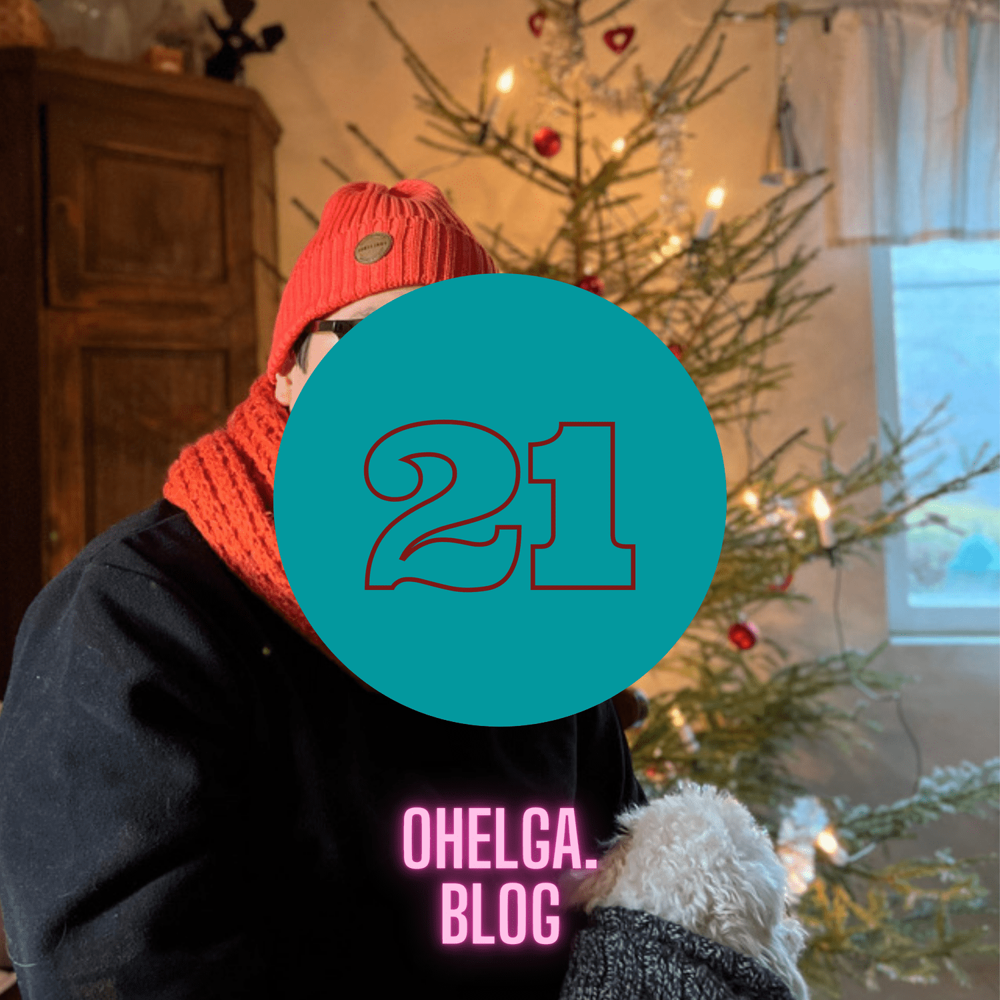

Parempi ja puhtaampi söpöily-parisuhde-deittailu-versio, olkaa hyvät! Eller en version man spelar när man vill att folk ska gå hem?
Apple Music:
Spotify:

Parempi ja puhtaampi söpöily-parisuhde-deittailu-versio, olkaa hyvät! Eller en version man spelar när man vill att folk ska gå hem?
Apple Music:
Spotify:

Kommentit / Kommentarer (2)
<p>Ja, ja stjyni roko. De är säkert begåvade men jag undrar vad julstämning och julen som högtid betyder i deras kultur. Men det är inte alls förbjudet hos oss heller att framföra sången i en sådan version så varför "mojtta".</p>
<p>Fork goes k-pop, och de var bättre på att sjunga. Riktigt vackra röster hade de, och här fanns också mycket känsla. Detta lyssnar jag gärna på. 8,5.</p>